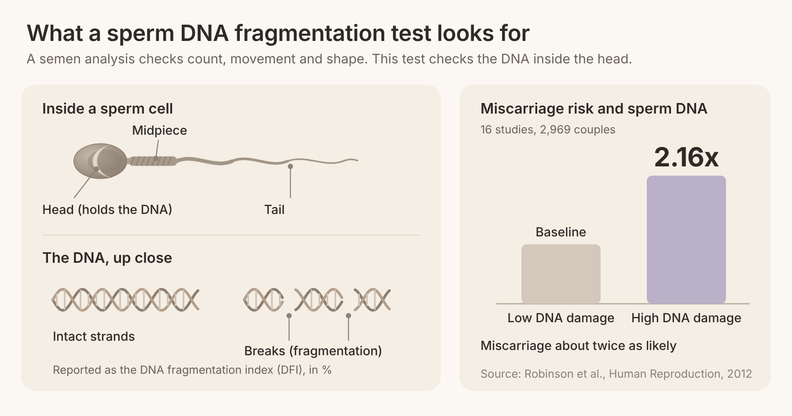
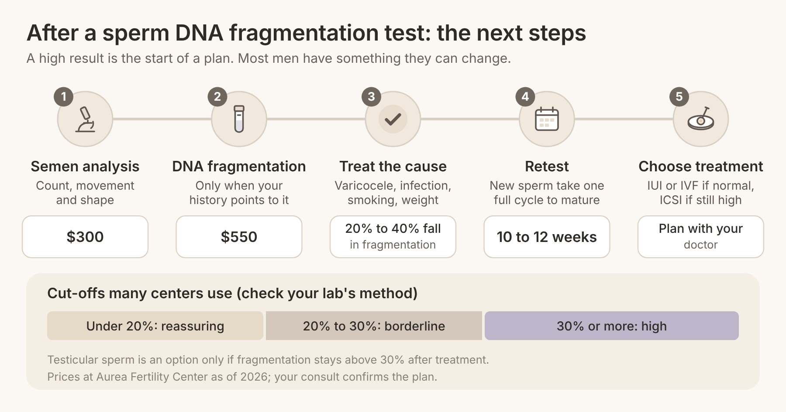

Quick answer: A sperm DNA fragmentation test measures how many sperm carry broken or damaged DNA, something a standard semen analysis cannot see. It is not a first-line test for every couple, but it is worth asking for after unexplained infertility, two or more pregnancy losses, failed IUI or IVF cycles, or a varicocele. A high result is often fixable, and it can change which treatment gives you the best chance.
In this article
A sperm DNA fragmentation test counts the share of sperm whose genetic material has breaks in it, reported as a percentage called the DNA fragmentation index (DFI). A routine semen analysis looks at count, movement (motility) and shape (morphology). It says nothing about the DNA packed inside each sperm head, which is why a man can have a "normal" semen analysis and still have high fragmentation.
When couples get a high result, the first reaction is usually some version of "how bad is this," often followed by "what are the chances of conception even with IVF." One person in a patient forum wrote, "The doctor wasn't alarmed at all," yet still went looking for someone to ask, "Do you have any experience with this." Those questions are fair, and the honest answer is that a high DFI is a signal to act on, not a verdict.
Why does it matter? An egg can repair a small amount of sperm DNA damage after fertilization. When the damage is heavier, embryos may grow more slowly, stop developing or fail to implant, and the risk of miscarriage rises. The damage usually comes from oxidative stress (an excess of reactive oxygen molecules), heat, infection, smoking, or problems during sperm maturation.
There are several lab methods, and they are not interchangeable. A 2026 clinical review in Human Reproduction describes the main ones:
TUNEL: labels DNA breaks directly; precise but labor-intensive.
SCSA (sperm chromatin structure assay): measures how easily the DNA unwinds, using a flow cytometer.
SCD (sperm chromatin dispersion): a simpler, lower-cost test read under a microscope.
Comet assay: shows broken DNA as a "tail" when sperm are placed in an electric field.
Because each test uses its own scale, always compare a result with the cut-off for the specific method your lab used.
The strongest reasons to test come from what has already happened while you have been trying. The AUA/ASRM male infertility guideline does not recommend the test in the very first workup, so these are the situations where it earns its place.
If both partners' basic tests are normal and you still are not pregnant, sperm DNA is one of the few things standard testing skips. The Human Reproduction review puts unexplained infertility in its top tier of reasons to test, because a result here can change your plan. If you are just starting out, our guide to trying to conceive under 40 covers the basic tests first.
Recurrent pregnancy loss means losing two or more pregnancies. The AUA/ASRM guideline says that for couples with recurrent loss, men should be evaluated with a karyotype and sperm DNA fragmentation, and the ESHRE 2022 guideline says testing "could be considered." Aurea's reproductive immunology team looks at the female side of the same question.
Intrauterine insemination (IUI) depends on sperm doing most of the work on their own. After two or three well-timed IUI cycles without a pregnancy, a DNA fragmentation result helps decide whether another IUI makes sense or whether moving to IVF is the better use of your time and money.
If your eggs fertilized but embryos stalled before day 5, or good-looking embryos did not implant, sperm DNA is worth checking before the next cycle. Time-lapse culture such as the EmbryoScope can show where development slowed, and the sperm result adds a piece of the explanation.
The second group of signs comes from the male partner's own health. These are context-dependent: they raise the chance of high fragmentation, and testing helps most when the result would change what you do next.
A varicocele is a cluster of enlarged veins above the testicle that raises its temperature and increases oxidative stress. It is one of the most common fixable causes of sperm DNA damage, and the review lists it alongside unexplained infertility as a top-tier reason to test.
Smoking, obesity, diabetes and genital tract infections all push oxidative stress up. If any of these apply, a sperm DNA fragmentation test gives you a baseline, so you can see whether quitting, losing weight or treating an infection is actually moving the number.
DNA fragmentation tends to rise as men get older, and regular exposure to heat, solvents or pesticides at work can add to it. These factors alone are weaker reasons to test, but combined with a failed cycle or a loss, they tip the balance toward testing.
The short answer: high sperm DNA fragmentation is linked to more miscarriages and lower pregnancy rates, but the strength of the link depends on the treatment, and the overall evidence is still rated low certainty.
A 2012 meta-analysis in Human Reproduction pooled 16 cohort studies covering 2,969 couples and found that miscarriage was about twice as likely (relative risk 2.16) when sperm DNA damage was high. A more recent umbrella meta-analysis in the European Journal of Medical Research combined 8 earlier meta-analyses covering more than 25,000 assisted reproduction cycles, and broke the results down by treatment:
Treatment | Outcome with high fragmentation | Relative risk | What it means |
IUI | Clinical pregnancy | 0.47 | Roughly half the chance of pregnancy |
IVF | Clinical pregnancy | 0.66 | About a third lower |
IVF | Live birth | 0.79 | About a fifth lower |
ICSI | Live birth | 0.94 | No significant difference |
ICSI | Miscarriage | 2.29 | More than twice the risk |
Two things stand out. First, the lab method matters: IUI and conventional IVF, where sperm have to reach and enter the egg by themselves, show the biggest drop in pregnancy rates. Second, intracytoplasmic sperm injection (ICSI), where one sperm is injected into each egg, protects the live birth rate on average, yet miscarriage risk still rises. ICSI gets a sperm into the egg, but it does not repair damaged DNA.
The authors rated the certainty of evidence as low for every outcome and suggested using the test as an add-on to a full workup rather than a routine stand-alone screen. That matches the guideline position: test when the result will change a decision.

There is no single normal range because each method has its own scale. As a working rule, many centers treat a DFI of 20% or more as worth acting on and 30% or more as high, according to the Human Reproduction review, which stresses that these are decision aids rather than hard cut-offs. On the SCSA method, about 25% is the usual diagnostic threshold.
This is the part most articles leave out. A high result is the start of a plan, and the plan usually follows these steps:
Repeat or confirm with a standard sample. Ask the lab about abstinence first; the review suggests about 2 to 3 days.
Find and treat the cause. That means checking for a varicocele, treating any infection, stopping smoking, working on weight and blood sugar, and reducing heat exposure. In the review, these steps were linked to roughly a 20% to 40% fall in fragmentation.
Repair a clinical varicocele if present. A meta-analysis in Basic and Clinical Andrology of 7 studies and 289 men found the fragmentation index fell by 6.86 percentage points after varicocele surgery.
Be careful with supplements. Antioxidants are popular, but the review warns they "should not be prescribed reflexively" for an abnormal result. Use them for a specific reason, with your doctor.
Retest after 10 to 12 weeks. New sperm take about one full production cycle to reach the ejaculate, so testing sooner will not show the effect of your changes.
Choose the treatment that fits the new number. If fragmentation is now normal, IUI or standard IVF may be reasonable. If it stays high, ICSI is usually preferred.
Consider testicular sperm only if it stays high. Sperm taken directly from the testicle often carry less DNA damage. A 2025 meta-analysis in Biology of 13 studies found lower fragmentation, higher live birth (odds ratio 2.40) and fewer miscarriages (odds ratio 0.31) with testicular sperm, analysed in 530 men for fragmentation, but rated the studies at moderate to serious risk of bias. The review reserves this for men whose fragmentation stays above 30% despite treatment, mainly after a failed cycle.
The key point: most men with a high result have something they can change, and three months of focused work before your next cycle is time well spent.
As of 2026, a sperm DNA fragmentation test at Aurea Fertility Center costs $550, and a standard semen analysis costs $300. Prices can change, and your consult confirms the plan. Prices elsewhere in the US vary by lab and method, and insurance coverage depends on your plan, so ask your insurer before you book. You can see every fee on Aurea's pricing page.
Aurea starts with an AI-enhanced semen analysis on the LensHooke X1 Pro and adds DNA fragmentation only when your history points to it, as described on our male fertility testing page. Physicians review every result with you. If treatment is coming up and you want a backup, sperm freezing in the office costs $650.
Questions to ask your doctor:
Which test method does your lab use, and what is its cut-off?
Do my history and semen analysis justify a DNA fragmentation test now?
Has the male partner been checked for a varicocele or infection?
If the result is high, should we wait 10 to 12 weeks and retest before IVF?
Would ICSI or testicular sperm change our odds in our case?
If you are heading toward IVF, our page on IVF under 40 explains the process, and our post on male factor infertility and IVF covers what to expect when sperm is the main issue. If you are over 40, have low ovarian reserve, or have had several failed IVF cycles, our sister clinic Rejuvenating Fertility Center specializes in more complex cases.

It is a lab test on a semen sample that measures the percentage of sperm with broken or damaged DNA. The result is called the DNA fragmentation index (DFI). It adds information a standard semen analysis cannot give, because count and movement do not tell you about the DNA inside each sperm.
It depends on the lab method. Many centers consider under 20% reassuring, 20% to 30% borderline and 30% or more high. Always compare your number with the cut-off for the specific test your lab used, since TUNEL, SCSA, SCD and Comet results are not interchangeable.
At Aurea Fertility Center the test costs $550 as of 2026, and a semen analysis costs $300. Prices at other labs vary, and coverage depends on your insurance plan.
Often, yes. Treating a varicocele or infection, stopping smoking, losing weight and reducing heat exposure were linked to about a 20% to 40% fall in fragmentation in a 2026 clinical review. Retest about 10 to 12 weeks later to see the effect.
It is linked to a higher risk. A meta-analysis of 2,969 couples found miscarriage was about twice as likely with high sperm DNA damage. That is why guidelines suggest testing the male partner after two or more losses.
ICSI helps sperm reach the egg, and on average live birth rates with ICSI were not significantly lower when fragmentation was high. However, miscarriage risk still rose, so lowering fragmentation first, or using testicular sperm when it stays high, may still matter.
A normal semen analysis is not the whole story, and a sperm DNA fragmentation test fills in what it misses when your history calls for it. A high result usually points to something you can change in about three months, and it helps you pick the treatment that fits instead of repeating one that is not working.
If you are wondering whether this test makes sense for you, Aurea Fertility Center can help you decide. Start with a free 20-minute nurse call or a $350 physician consult, and we will build a plan around both partners' results. Contact Aurea to book a same-week visit.